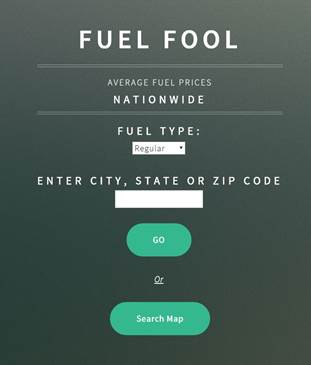
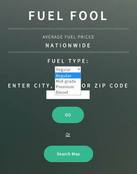
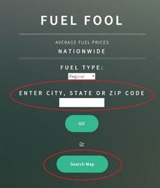
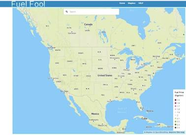
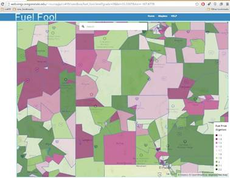
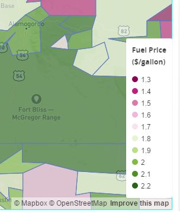
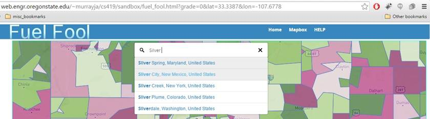
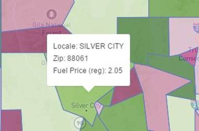

FUEL FOOL: A HOW-TO GUIDE
3.5 How to Run (User Interaction)

Figure 2 - Fuel Fool home page
The user will select a fuel grade on the home page, and then choose to either enter a location, or view the entire map of the United States. If the user wishes to change fuel grade while viewing the map, the user will return to the above home page to make a new selection.
3.5.1 Fuel Type Selection
The user is constrained to the selection of 4 fuel types by providing the types in a drop-down menu. The options are regular, mid-grade, premium and diesel; the default selection is regular.

Figure 3 Fuel Selection
3.5.2 Geographic Location
The user also has the option to enter a location to center the map on the following page. One text window is provided to enter a city, state; zip code; or an address. If the user does not want to enter a location, an option to view a map of the United States (zoomed out) is also provided. By clicking on “Search Map”, the user will be taken to the map page (with the selected fuel grade) centered on the geographic center of the United States. If the user enters a location in the provided text box, then the map will be zoomed in, and centered on the location provided.

Figure 4 Location Selection
3.5.3 Fuel Fool Map
Once the user selects either “GO” or “Search Map”, the user will be taken to a map of the United States. If the user selects “Search Map” a zoomed out map will be displayed ( Figure 5); the map will be zoomed out such the entire US can be seen, and will have no zip codes drawn until the user manual zooms in. Figure 6 shows a map that was centered on the user entering “Chloride, NM”.

Figure 5 - No Location Entered

Figure 6 - Location Entered by User
Once on the map page, the user can click and drag the map to view another location, zoom in and out with the mouse wheel, zoom in by double-clicking the left mouse button, or rotate the map by clicking and dragging the right mouse button. Mobile users may manipulate the map in the familiar forms of; zoom in by touching the screen and spreading two fingers, zoom out by touching the screen and pulling two fingers inward, and rotating the map by touching the screen and rotating two fingers. Typically the thumb and forefinger are used.
3.5.3.1 Fuel Fool Map Features
The legend of the map is displayed in the lower right of the map. This legend will display the fuel price intervals (in dollars per gallon) and the corresponding colors used on the map. The legend can be seen below in Figure 7.

Figure 7 - Fuel Fool Legend
At the top of the map, there is a search box, powered by a modified version of the Mapbox Geocoder API, that will re-center the map based on the user’s input. In this box user can enter: a state; city, state; an address; or a zip code to re-center the map. It’s important to note that the Geocoder will provide suggestions based on the user’s typing and to jump to that location, the user will need to select one of the suggestions, rather than the “enter” key. It is important for mobile user’s to type slowly enough that these suggestions are populated. Typing too quickly will result in no suggestions. An example of the suggested location is below in Figure 8.

Figure 8 - Using the Geocoder
3.5.3.2 Displaying Zip Code Information
By clicking in a colored area (zip code), the map will display a pop up with: locale, zip code, fuel price, and fuel grade. Mobile users will simply tap on a location. This pop-up is displayed below, in Figure 9.

Figure 9 - Pop-up Information
As previously seen, in Figure 8, there are a few links at the top of the web page. The links are self-explanatory: Home: return user to the homepage; Mapbox: take the user to www.mapbox.com ; HELP: link the user to a help page. The help page will simply be this section of the document.